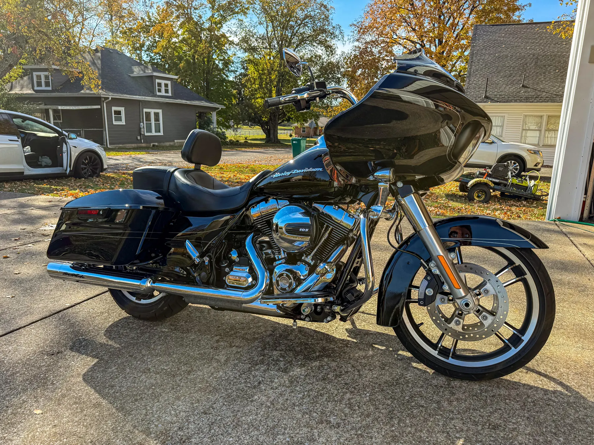
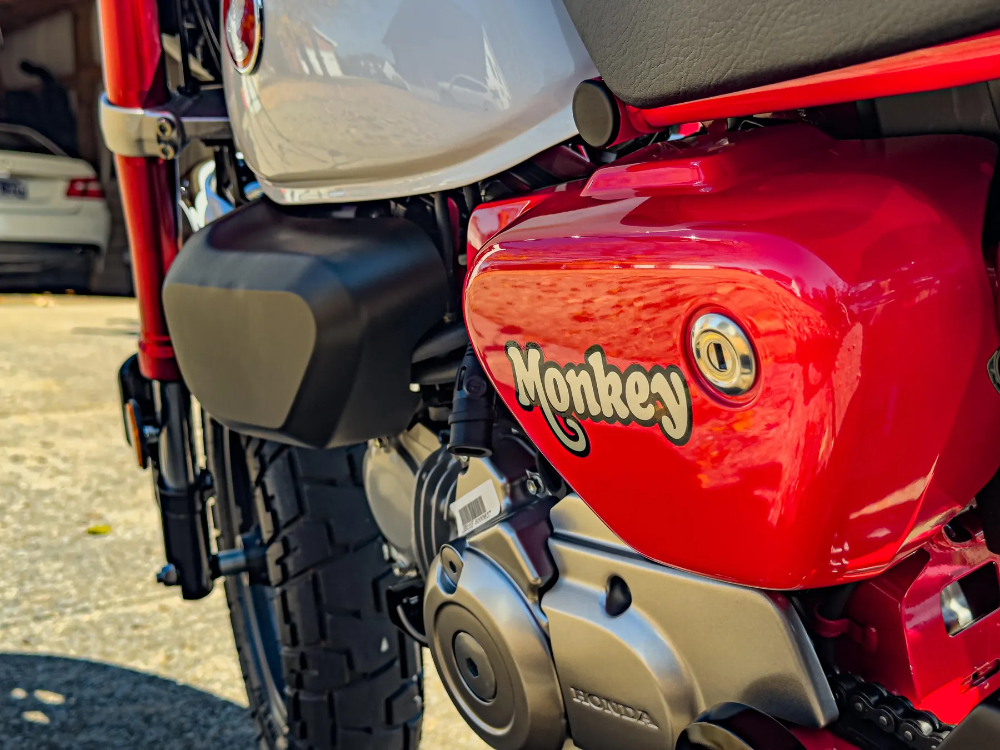

What is included in motorcycle detailing?
A motorcycle detail is about more than a quick wipe-down. The small areas are the detail.

Motorcycle Detailing
Detailed attention for bikes, chrome, paint, wheels, and the tight spots that make motorcycles different from cars.

The Brief
Motorcycles reward patience. Sneaky Clean handles motorcycles as their own category, with careful attention around paint, chrome, wheels, trim, and tight areas.
A motorcycle detail is about more than a quick wipe-down. The small areas are the detail.
Motorcycles vary a lot by style, condition, and access. Photos help us quote fairly and recommend the right approach.
The Evidence
Photos do the selling. These are the kinds of results customers actually care about.

Case Notes
Yes. Motorcycle detailing is available by quote after reviewing the bike and the level of work needed.
Yes. Motorcycle details focus on the areas that make bikes different: chrome, wheels, trim, paint, and tight access points.
Photos are helpful and often the fastest way to get a clear motorcycle detailing quote.